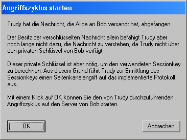

Dieser Dialog wird angezeigt, wenn Sie im Dialog Seitenkanalangriff auf das Hybridverschlüsselungsprotokoll die Schaltfläche Angriffszyklus starten klicken.

Nach einem Klick auf die Schaltfläche OK werden Sie gefragt, auf welche Weise Sie den Seitenkanalangriff auf das Hybridverschlüsselungsprotokoll durchführen wollen.
Sie haben die Möglichkeit, den Angriff
durchzuführen.
Der Sammelschrittmodus hat den Vorteil, dass der Angriff bedeutend schneller abläuft, weil alle Einzelschritte von Trudy (Senden einer Nachricht, Auswerten der Reaktion des Servers) automatisch hintereinander durchgeführt werden bis Trudy Erfolg hat.
Dagegen bietet der Einzelschrittmodus den Vorteil, nach jedem einzelnen Schritt des Angriffs nachprüfen zu können, inwiefern sich relevante Daten der beteiligten Parteien geändert haben.